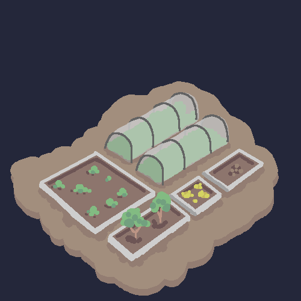

Created: 2023-07-04
Last modified: 2023-07-10
🌱 This article is growing...
Reasoning: We pretend this little organisation we have is a ‘Town’ in a desolate and lonely desert. Why not tie ourselves deeper into our roots and (you know), make our websites based on said Town.
Go around the Town enough, and you will notice that some people have a type of stall or shop set up. Loren has a garden and a coffee shop, Anonymous has a ‘'’garden’’’, Pi-thagoras has a chicken pen, and so on so forth. I have a complex, the 99th complex.
This complex encompasses everything you will find here, the greenhouse and green-spaces where I grow my crops outside, the ramblings you’ll find all around, and the xob comics.
the greenhouse:

found on spicata.99000000.xyz. no rights reserved.
published by 99 000 000.xyz.